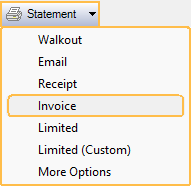
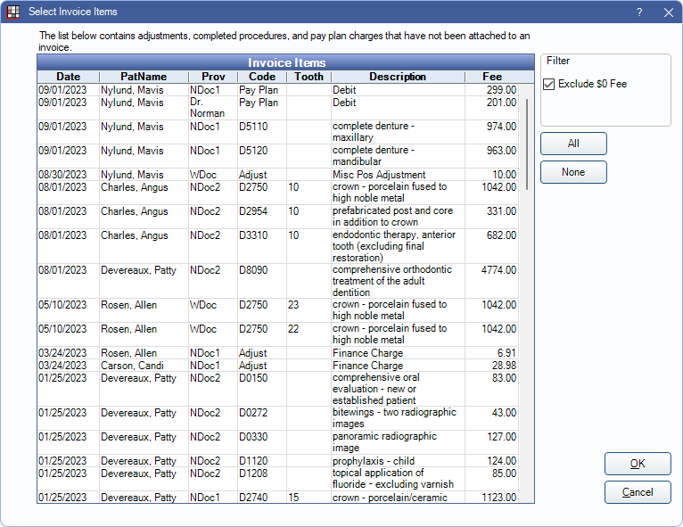

Invoice
In the Account Module toolbar, click the Statement dropdown, Invoice.
Invoice is generated based on selected procedures, adjustments, and pay plan charges.
- Selecting Invoice before selecting procedures creates an invoice for all procedures, adjustments, and pay plan charges for today, unless this is a Super Family. See Super Familes below for more information.
- Once attached to an invoice, the same procedures and adjustments cannot be attached to a new invoice.
- Printed and emailed invoices are saved as PDFs in the patient account and Imaging Module, Statements image category.
- To reprint, resend, or view, double-click on the invoice number in the patient account.

Change invoice options as needed.
- Date: Defaults to today's date.
- Sent: Automatically checked once the invoice is printed or emailed. It can also be changed manually.
- Hide payment options: Automatically checked to exclude amount due, date due, amount enclosed, credit card payment section, and aging information. If unchecked, the entire family balance reflects in the Amount Due field which may be different than the invoice total.
- Single patient only: Informational only and cannot be changed.
- Send to Super Family: Informational only and cannot be changed.
- Invoice: Always checked and cannot be changed.
- Invoice number: Automatically generated and cannot be changed.
- Note: By default shows the Invoice Note set in Billing Defaults.
- Bold Note: Shows in bold red above and below the procedure grid.
Click View to preview the invoice. If a PDF has been created, View opens the PDF. If no PDF exists, View opens Fill Sheet. Edit any custom Sheet Field Types then Print or Email to save the changes.
Click Print to send the invoice to the default Printer.
Click Pat Portal to send the invoice to the Patient Portal Feature.
Click Email to email the invoice as a PDF.
Click OK to generate the invoice without saving, printing or emailing the PDF.
If the Mode is changed on an existing invoice, a new PDF is created.
Sample Invoice

Setup Options
Invoices use the Statement Layout and can be customized. Set the sheet to use when generating Invoices in Sheet Def Defaults.
- Payments are not included on invoices by default. Add StatementInvoicePayment Grid to the Invoice statement layout to include them.
In Preferences, enable Invoice payments grid shows write-offs to show insurance write-offs on Invoices.
Super Families
When creating an invoice from a Super Family, if no procedures, adjustments, or pay plan charges are selected, Select Invoice Items opens. All completed procedures, adjustments, and pay plan charges for all members of the Super Family, that have not been attached to an invoice, are listed here.
Exclude $0 Fee: Check to hide items from the grid with a $0 fee.
All: Click to highlight all items in the grid.
None: Click to deselect all items in the grid.
Click OK to create the invoice with the selected items. The Statement window shown above opens.
Invoice Search
Set up a Display Field in the Patient Select window to search for patients by invoice number.
Foreign Users
To use the title TAX INVOICE, add the output text field, statementIsTaxReceipt, to the sheet.
To show the word COPY at the top of statements printed more than once, add the output text field, statementIsCopy, to the sheet. To print again without the word COPY, uncheck the Sent checkbox and the Invoice Copy checkbox, then print again.